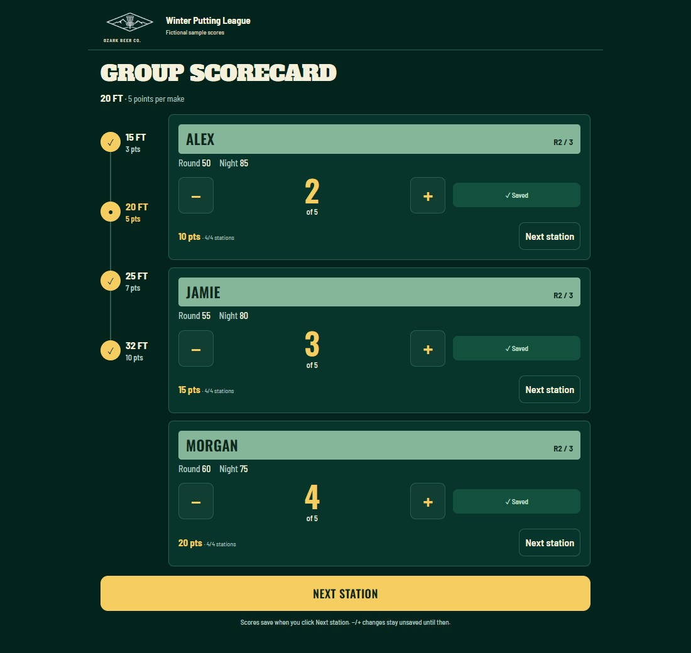
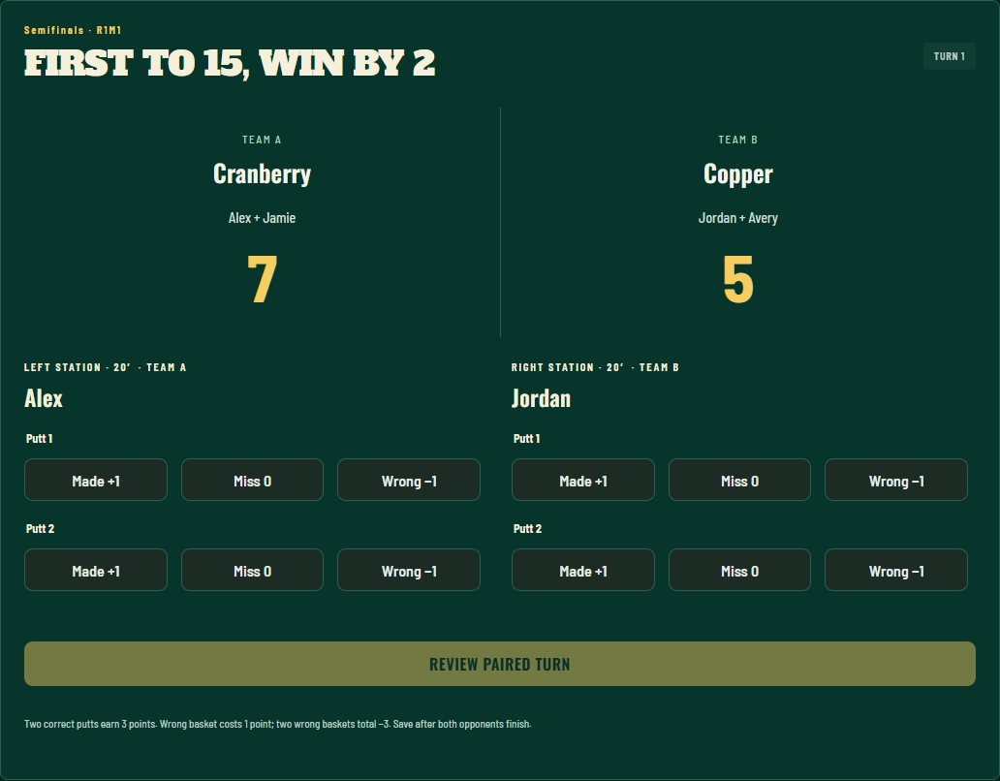
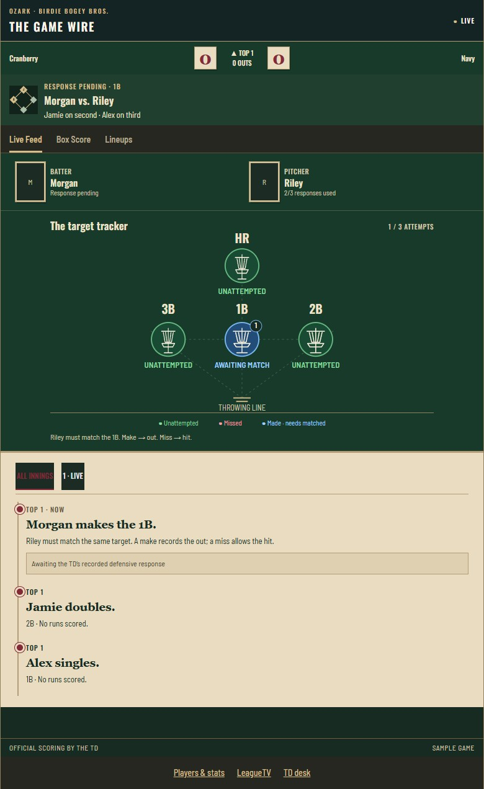
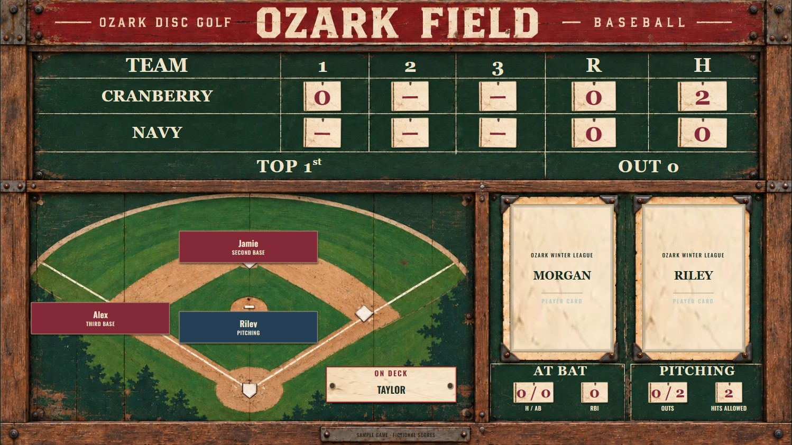

01 / Check-in and cards
Organizers create an event, check players in, and assign scoring groups. A scorekeeper can record scores for up to three players on one phone.
An app for checking players in, recording scores, and showing standings for singles, doubles, and disc golf baseball.
The screenshots below show the app with fictional players and scores. Player records and organizer tools are private.
Screenshots from the app with fictional players and scores. Select an image to enlarge it.

Record up to three players’ scores on one card.

Enter both players’ putts and review the turn before saving.

Follow at-bats, pitcher responses, runners, and the play feed.

Show the score, runners, batter, and pitcher on a large screen.
A short guide to check-in, scoring, and results.
Organizers create an event, check players in, and assign scoring groups. A scorekeeper can record scores for up to three players on one phone.
Play three rounds. Each round includes five putts at 15, 20, 25, and 32 feet. Each make earns 3, 5, 7, or 10 points, respectively. Review the scores before submitting a round.
Two-person teams alternate between two stations. Each player takes two putts per station. One make earns one point; two makes earn three points. Putts into the wrong basket lose points. The first team to reach 15 with a lead of at least two wins.
Four baskets represent a single, double, triple, and home run. The batter can try up to three different baskets. After a make, the pitcher attempts the same putt from the same spot. If the pitcher makes it, the batter is out. If the pitcher misses, the hit counts.
Standings can be viewed on a phone or television. Players who enter without paying are listed separately and are excluded from payouts.
Organizers review score corrections and approve final payouts.
I designed and built the check-in screens, scorecards, and standings, and implemented the scoring rules for all three games. I also tested score entry, corrections, and results.
I used AI tools to help write code, then reviewed and tested it.